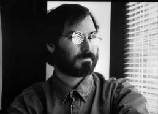

İkinci Geliş
Ne Vahşi Canavar, Son Saati Geldi Nihayet...

Steve Jobs, 1996
Dağılış
Jobs 1988’de NeXT bilgisayarı tanıttığında insanlar heyecanlanmıştı. Ama bilgisayar ertesi sene nihayet piyasaya sürüldüğünde bu heyecan dindi. Jobs’ın basını büyüleme, sindirme ve kandırma taktikleri işe yaramamaya başladı ve şirketin sorunlarıyla ilgili haberler yayınlandı. “Endüstrinin karşılıklı değiştirilebilir sistemlere yöneldiği bir zamanda NeXT diğer bilgisayarlarla uyumlu değil,” diye yazdı A.P.’den Bart Ziegler. “NeXT’te çalıştırılabilecek yazılımların sayısının göreceli azlığı müşterileri soğutuyor.”
NeXT yeni bir kategoride, iş istasyonunun gücüyle kişisel bilgisayarın dostaneliğini isteyen insanlara yönelik kişisel iş istasyonu kategorisinde lider olmaya çalıştı. Ama bu müşteriler artık hızla büyüyen Sun’a yönelmişlerdi. NeXT’in 1990’daki geliri 28 milyon dolardı; Sun ise o yıl 2,5 milyar dolar kazandı. IBM NeXT yazılımı lisans anlaşmasını iptal edince Jobs mizacına ters bir şey yapmak zorunda kaldı: Donanımla yazılımın bütünsel bir şekilde bağlantılı olmaları gerektiğine inanmasına karşın, NeXTSTEP işletim sisteminin diğer bilgisayarlarda kullanılmasına izin vermeyi Ocak 1992’de kabul etti.
Jobs’ı savunanlardan biri, Apple’da onunla sürtüşmüş olan ve sonra kendisi de alaşağı edilen Jean-Louis Gassée’ydi. Bir yazısında NeXT ürünlerinin son derece yaratıcı olduklarından bahsetti. “NeXT bir Apple olmayabilir,” dedi Gassée, “ama Steve hâlâ Steve.” Birkaç gün sonra evinin kapısı çalındı ve karısı kapıyı açtıktan sonra koşarak üst kata çıkıp Gassée’ye Jobs’ın kapının önünde durduğunu haber verdi. Jobs Gassée’ye yazısı için teşekkür etti ve onu bir etkinliğe davet etti: Jobs ve Intel’den Andy Grove, NeXTSTEP’in IBM/Intel platformuna taşınacağını birlikte açıklayacaklardı. “Steve’in babası Paul Jobs’ın yanında oturdum; etkileyici, onurlu bir adamdı,” diye anımsıyor Gassée. “Zor bir evlat yetiştirmişti, ama oğlunu sahnede Andy Grove’un yanında görmekten gurur duyuyordu.”
Bir yıl sonra Jobs bir sonraki, kaçınılmaz adımı attı: Donanım üretmeyi tamamen bıraktı. Pixar’da donanım üretmekten vazgeçmesi gibi acı verici bir karardı bu. Ürünlerini her yönüyle önemserdi, ama donanıma özellikle tutku duyuyordu. Muhteşem tasarımlar onu şevklendirirdi; üretimin ayrıntılarına kafayı takardı ve robotlarının kusursuz makinelerini üretmesini saatlerce seyrederdi. Ama artık işçilerinin yarısından fazlasını işten çıkarması, sevgili fabrikasını Canon’a satması (Canon şık mobilyaları açık arttırmayla sattı) ve sıradan makine üreticilerine işletim sistemi lisansı satmaya çalışan bir şirketle idare etmesi gerekiyordu.
1990’ların ortalarında Jobs artık yeni aile hayatından ve film piyasasındaki şaşırtıcı başarısından az çok haz alsa da, kişisel bilgisayar endüstrisinin durumu karşısında umutsuzluğa kapılmıştı. “Yenilik diye bir şey kalmadı,” dedi 1995’in sonunda, Wired’dan Gary Wolf’a. “Microsoft çok az yenilik getirererek piyasaya hâkim oldu. Apple kaybetti. Masaüstü pazarı karanlık bir çağa girdi.”
O sıralar Anthony Perkins’e ve Red Herring editörlerine verdiği bir röportajda da karamsardı. Önce kişiliğinin “Kötü Steve” yönünü sergiledi. Perkins’le iş arkadaşlarının gelmelerinden kısa süre sonra Jobs “yürüyüş yapmak” için arka kapıdan çıkıp gitti ve 45 dakika geri dönmedi. Derginin fotoğrafçısı fotoğraf çekmeye başlayınca, Jobs kadını alaycı bir dille durdurdu. Perkins sonradan şöyle dedi: “Deliliğinin kaynağı manipülasyon muydu, bencillik miydi yoksa düpedüz kabalık mıydı anlayamadık.” Jobs nihayet röportaja başladığında, webin gelişiminin Microsoft’un egemenliğini pek durdurmayacağını söyledi. “Windows kazandı,” dedi. “Maalesef Mac’i yendi, UNIX’i yendi, OS/2’yi yendi. Onlardan daha kötü olan bir ürün kazandı.”
NeXT’in entegre bir donanım/yazılım ürününü satamaması Jobs’ın tüm felsefesine gölge düşürdü. “Apple’daki formülü uygulamaya çalışmamız, donanımla yazılımı birlikte üretmemiz hataydı,” dedi 1995’te. “Bence dünyanın değiştiğini fark etmeli ve sadece bir yazılım şirketi olmalıydık.” Ama ne kadar uğraşırsa uğraşsın, bu yaklaşım onu heyecanlandırmıyordu. Müşterilerin bayılacağı muhteşem uçtan uca ürünler yapmak yerine, NeXT yazılımını çeşitli donanım platformlarına yükleyecek şirketlere yenilikçi yazılımlar satmaya çalışmaya mahkûmdu artık. “İstediğim bu değildi,” dedi sonradan esefle. “Bireylere ürün satamamak çok canımı sıkıyordu. Bu dünyaya şirketlere yenilikçi ürünler satmaya ve yazılımlarımın başkalarının berbat donanımlarında kullanılmasına izin vermeye gelmedim ben. Bunu asla sevmedim.”
Apple Düşüşte
Jobs’ın alaşağı edilmesinden sonraki birkaç yıl boyunca Apple masaüstü yayıncılık piyasasındaki geçici egemenliği sayesinde kâr marjını yüksek tutabildi. 1987’de kendini dahi gibi hisseden John Sculley şimdi utandırıcı görünen bir dizi açıklama yaptı. “Jobs Apple’ın muhteşem bir tüketici ürünleri şirketi olmasını istiyordu,” diye yazdı Sculley. “Bu delice bir plandı... Apple asla bir tüketici ürünleri şirketi olamazdı... Gerçekliği dünyayı değiştirme hayallerimize uyduramayız... Yüksek teknoloji, bir tüketici ürünü olarak satılacak şekilde pazarlanamaz.”
Afallayan Jobs, Sculley’nin yönetimindeki Apple’ın 1990’ların başlarında pazar payını ve gelirlerini giderek yitirmesiyle birlikte sinirlenmeye ve horgörü duymaya başladı. “Sculley ahlâksız insanlar getirip ahlâksızca ilkeler koyarak Apple’ı mahvetti,” dedi Jobs sonradan esefle. “Ortaya muhteşem ürünler koymaktan çok para kazanmakla –temelde kendileri için– ilgileniyorlardı.” Jobs, Sculley’nin kâr tutkusunun pazar payının artmasını engellediği kanısındaydı. “Macintosh Microsoft’a yenildi, çünkü Sculley ürünü geliştirmek ve makul bir fiyattan satmak yerine olabildiğince kâr etmekte diretti.”
Microsoft’un Macintosh’un grafik kullanıcı arayüzünü taklit etmesi birkaç sene almıştı, ama 1990’larda bu taklidi Windows 3.0 adıyla piyasaya sürüp, masaüstü pazarının hâkimi olma yolunda ilerlemeye başladı. Ağustos 1995’te piyasaya sürülen Windows 95 tüm zamanların en başarılı işletim sistemi oldu ve Macintosh’un satışları epey azalmaya başladı. “Microsoft’un tek yaptığı başka insanların ürünlerini taklit etmekti, sonra da azimli davrandı ve IBM uyumluluğundan faydalandı,” dedi Jobs sonradan. “Apple başına gelenleri hak etti. Ben gittikten sonra yeni bir şey icat etmedi. Mac pek gelişmedi. Microsoft için kolay bir rakipti.”
Apple’a sinirlendiği, Stanford Business School öğrenci kulübü için bir öğrencinin evinde yaptığı konuşmasından anlaşılıyordu; öğrenci ondan bir Macintosh klavyesini imzalamasını istedi. Jobs kendisinin şirketten ayrılmasından sonra eklenen tuşları çıkarabilirse imza atacağını söyledi. Araba anahtarlarını alıp, bir zamanlar yasakladığı dört imleç tuşunu ve ayrıca en tepedeki “F1, F2, F3...” diye sıralanmış işlev tuşlarını çıkardı. “Bu klavyeleri teker teker değiştirerek dünyayı değiştireceğim,” dedi soğukça. Sonra da mahvettiği klavyeyi imzaladı.
Jobs 1995 Noeli’nde Hawaii’deki Kona Village’da yaptığı tatilde bir arkadaşıyla, ele avuca sığmaz Oracle başkanı Larry Ellison’la kumsalda yürüyüşe çıktı. Apple’ı satın almayı ve başına Jobs’ı geçirmeyi konuştular. Ellison 3 milyar dolar verebileceğini söyledi. “Apple’ı satın alırım, sen CEO olduğun için hisselerin %25’ini alırsın, sonra da şirkete eski ihtişamını geri kazandırırız.” Ama Jobs kabul etmedi. “Saldırgan iktisaptan hazzetmem,” diye açıkladı. “Ama beni geri çağırsalar kabul edebilirim, o ayrı.”
Apple’ın 1980’lerin sonlarında %16 olan pazar payı 1996’da %4’e düşmüştü. 1993’te Sculley’nin yerine geçen Michael Spindler şirketi Sun’a, IBM’e ve Hewlett-Packard’a satmaya çalıştı. Başaramadı ve Şubat 1996’da yerine National Semiconductor’ın CEO’su olan araştırma mühendisi Gil Amelio getirildi. Amelio’nun ilk senesinde şirket 1 milyar dolar kaybetti ve 1991’de 70 dolar olan hisse fiyatı 14 dolara düştü; oysa o sıralar teknoloji balonu diğer hisseleri uçuruyordu.
Amelio Jobs’tan hazzetmiyordu. 1994’te, Amelio’nun Apple yönetim kuruluna seçilmesinden hemen sonra tanışmışlardı. Jobs onu arayıp “Gelip seninle görüşmek istiyorum,” demişti. Amelio onu National Semiconductor’daki ofisine davet etti ve Jobs’ın gelişini ofisinin cam duvarından seyretti. “Jobs kaçamak dövüşen agresif, endamlı bir boksöre ya da avının üstüne atlamaya hazır bir orman kedisine benziyordu,” dedi Amelio sonradan. Jobs birkaç dakikalık hoşbeşten sonra –ki onun için normalden çok daha uzun bir süreydi–, gelme sebebini açıklayıverdi. Tekrar Apple CEO’su olmak için Amelio’dan yardım istedi. “Apple’daki askerleri harekete geçirebilecek tek bir kişi var,” dedi Jobs, “şirketi düzeltebilecek tek bir kişi var.” Macintosh’un devrinin kapandığını ve Apple’ın bir o kadar yaratıcı, yeni bir ürün ortaya koymasının zamanının geldiğini savundu.
“Mac öldüyse yerine ne geçecek?” diye sordu Amelio. Jobs’tan aldığı yanıttan etkilenmedi. “Steve doğru dürüst yanıt vermedi,” dedi Amelio sonradan. “Yuvarlak konuşuyordu.” Amelio Jobs’ın gerçekliği çarpıtma sahasına tanık olduğunu hissetti ve ondan etkilenmediği için gurur duydu. Jobs’ı ofisinden kabaca kovdu.
Amelio 1996 yazında ciddi bir sorunla karşı karşıya olduğunu fark etti. Apple umutlarını Copland adlı yeni bir işletim sistemi yaratmaya bağlamıştı; ama Amelio CEO olduktan kısa süre sonra, tanıtımı yapılan ama henüz piyasaya sürülmemiş bu işletim sisteminin Apple’ın daha iyi bilgisayar ağı ve bellek koruması gereksinimini karşılamayacak bir balon olduğunu ve açıklananın aksine 1997’de piyasaya sürülmeye hazır olmayacağını keşfetti. Amelio kısa sürede bir alternatif bulacağını açıkladı. Mesele şuydu ki alternatifi yoktu.
Yani Apple’a stabil ve tercihen Unix’e benzeyen, nesne odaklı uygulama katmanına sahip bir işletim sistemi hazırlayabilecek bir ortak gerekiyordu. Böyle bir yazılımı hazırlayabilecek bariz bir şirket vardı –NeXT–, ama Apple’ın o yöne bakması zaman alacaktı.
Apple başta Jean-Louis Gassée’nin kurduğu Be şirketinde odaklandı. Gassée Be’nin Apple’a satılması için pazarlığa başladı, ama Ağustos 1996’da Amelio’yla Hawaii’de yaptığı bir görüşmede şansını fazla zorladı. 50 kişilik ekibini Apple’a getirmek istediğini ve şirketin %15’ini (ki değeri 500 milyon dolar civarıydı) istediğini söyledi. Amelio afallamıştı. Apple Be’ye 50 milyon dolar civarı değer biçmişti. Birkaç tekliften ve karşı tekliften sonra, Gassée 275 milyon dolardan aşağı inmeyi reddetti. Apple’ın başka seçeneği olmadığını düşünüyordu. Amelio Gassée’nin “Onları taşaklarından tuttum ve acıtana kadar sıkacağım,” dediğini başkalarından işitti. Bu hoşuna gitmedi.
Apple’ın baş teknoloji sorumlusu Ellen Hancock, Sun’ın Unix tabanlı işletim sistemi Solaris’i kullanmalarını savundu, Solaris’in henüz kullanıcı dostu bir arayüze sahip olmamasına karşın. Amelio Microsoft’un Windows NT’sini kullanmayı düşündü tuhaf bir şekilde; bu işletim sistemi yüzeysel olarak, Mac’e benzeyecek şekilde değiştirilebilirdi ve Windows kullanıcıları için erişilebilir olan çok sayıda yazılımla uyumlu olurdu. Anlaşmaya hevesli olan Bill Gates, Amelio’yu bizzat aramaya başladı.
Bir seçenek daha vardı elbette. İki yıl önce, Macworld dergisi köşe yazarı (ve eski Apple yazılım pazarlamacısı) Guy Kawasaki bir basın duyurusu parodisi yayınlayarak, Apple’ın NeXT’i satın aldığı ve Jobs’ı CEO’luğa getirdiği şakasını yapmıştı. Bu yazıda Mike Markkula’nın Jobs’a şunu sorduğu söyleniyordu: “Hayatının geri kalanını Unix’in allanıp pullanmış halini satarak mı geçirmek istersin, yoksa dünyayı değiştirmek mi?” Jobs ise teklifi kabul ediyor ve “Artık baba olduğumdan, daha düzenli bir gelir kaynağına ihtiyacım var,” diyordu. Duyuruda “Jobs’ın NeXT deneyimi sayesinde Apple’da daha alçakgönüllü olacağı,” söyleniyordu. Basın duyurusunda yapılan bir alıntıda Bill Gates, artık Jobs’ın Microsoft’un kopyalayabileceği yeni ürünler yaratacağını söylüyordu. Bu basın duyurusu baştan aşağı şakaydı elbette. Ama şakaların gerçeğe dönüşme alışkanlığı vardır tuhaf bir şekilde.
Cupertino’ya Gitmek
“Steve’i arayıp bu konuyu konuşacak kadar yakından tanıyan var mı?” diye sordu Amelio personeline. İki yıl önce Jobs’la yaptığı görüşme kötü bittiğinden, Jobs’ı bizzat aramak istemiyordu. Ama sonunda bunu yapmasına gerek kalmadı. Apple NeXT’ten sinyaller almaya başlamıştı bile. NeXT’teki bir orta düzey ürün pazarlamacı olan Garrett Rice, Jobs’a sormadan Ellen Hancock’u aramış ve yazılımlarına göz atmak isteyip istemediğini sormuştu. Hancock onunla görüşecek birini gönderdi.
1996’nın Şükran Günü’ne gelindiğinde iki şirket orta düzey konuşmalara başlamışlardı ve Jobs doğrudan Amelio’yu aradı. “Japonya’ya gidiyorum, ama bir hafta sonra döneceğim ve döner dönmez seninle görüşmek istiyorum,” dedi Jobs. “Karşılıklı konuşmadan karar verme.” Amelio, Jobs’la daha önce yaşadığı deneyime karşın, onun aramasına çok sevindi ve onunla birlikte çalışma ihtimali heyecanlanmasına yol açtı. “Steve’in beni araması, büyük bir şişe dolusu yıllanmış şarabın kokusunu içime çekmek gibiydi,” diye anımsıyordu. Karşılıklı konuşmalarından önce Be’yle ya da başka bir şirketle anlaşma yapmayacağına söz verdi.
Jobs için Be’yle arasındaki rekabet hem mesleki, hem de kişiseldi. NeXT başarısız oluyordu ve Apple tarafından satın alınması, cazip bir can simidi olurdu. Ayrıca Jobs bazen epey kinci olabiliyordu ve Gassée listesinin neredeyse en tepesindeydi, Sculley’den bile yukarıdaydı. “Gassée cidden kötü bir adam,” dedi Jobs sonradan. “Hayatımda tanıdığım insanlar arasında gerçekten kötü diyebileceğim birkaç kişiden biri. 1985’te beni sırtımdan bıçakladı.” Sculley ise en azından Jobs’ı göğsünden bıçaklayacak kadar centilmendi.
Steve Jobs 2 Aralık 1996’da Apple’ın Cupertino’daki merkezine, on bir yıl önce kovulmasından beri ilk kez ayak bastı. Yöneticilere ait toplantı odasında Amelio ve Hancock’la, NeXT’in satılması konusunda görüştü. Bir kez daha oradaki beyaztahtayı kullanmaya başladı; bu kez NeXT’in kuruluşundan beri görülen dört bilgisayar sistemi dalgasından (en azından iddiası buydu) bahsetti. Be’nin işletim sisteminin tamamlanmadığını ve NeXT’inki kadar gelişkin olmadığını savundu. Saygı duymadığı iki insana konuşmasına karşın ikna ediciliğinin doruğundaydı. Mütevazılık rolü yapmakta özellikle ustaydı. “Herhalde tamamen çılgınca bir fikirdir,” dedi, “ama istediğiniz her anlaşmaya varım – yazılımın lisansını verebilirim, şirketi satabilirim, ne isterseniz.” Aslında her şeyi satmak istiyordu ve bunu sağlamaya çalıştı. “Yakından bakınca yazılımımdan fazlasını isteyeceksiniz,” dedi onlara. “Bütün şirketi, tüm personeliyle birlikte almak isteyeceksiniz.”
“Baksana Larry, Apple’ı satın almadan oraya geri dönüp tekrar yönetmemin bir yolunu buldum galiba,” dedi Jobs Ellison’a, Hawaii’deki Kona Village’da yaptıkları uzun bir yolculukta; o Noel’de ikisi de oraya gitmişlerdi. Ellison şöyle anımsıyordu: “Stratejisini açıkladı: Apple’ın NeXT’i satın almasını sağlayacaktı, sonra da yönetim kuruluna girecekti ve bunun bir adım ötesi CEO’luktu.” Ellison Jobs’ın önemli bir noktayı gözden kaçırdığını düşündü. “Ama Steve, anlamadığım bir şey var,” dedi. “Şirketi satın almazsak nasıl para kazanacağız?” Hedeflerinin birbirinden ne kadar farklı olduğunu anımsatan bir sözdü bu. Jobs elini Ellison’ın sol omzuna koydu, onu burunları neredeyse birbirine değecek kadar yakına çekti ve dedi ki: “Larry, arkadaşın olmamın gerçekten önemli olmasının sebebi bu. Senin daha fazla paraya ihtiyacın yok.”
Ellison karşılık olarak neredeyse sızlandığını anımsıyordu. “Eh, paraya ihtiyacım olmayabilir, ama neden o parayı Fidelty’deki fon yöneticisinin teki alsın ki? Neden başkası alsın? Neden biz almayalım?”
“Apple’a geri dönmem durumunda şirketin hisselerine sahip olmamamızın etik açıdan bana avantaj yaratacağına inanıyorum,” diye karşılık verdi Jobs.
“Steve, senin bu etik avantajın epey tuzluya patlar,” dedi Ellison. “Bak Steve, sen en iyi dostumsun ve Apple senin şirketin; ne istersen yaparım.” Her ne kadar Jobs sonradan o sıralar Apple’ı ele geçirme planları kurmadığını söylese de, Ellison bunun kaçınılmaz olduğu kanısındaydı. “Amelio’yla yarım saatten fazla zaman geçiren herkes, onun kendini mahvetmekten başka bir şey yapamayacağını görebilirdi,” dedi sonradan.
NeXT’le Be’nin arasındaki büyük kapışma 10 Aralık’ta, Palo Alto’daki Garden Court Oteli’nde, Amelio’yla Hancock’un ve başka altı Apple yöneticisinin karşısında gerçekleşti. Önce NeXT başladı; Avie Tevanian yazılımı gösterirken Jobs hipnotize edici pazarlamacılığını sergiledi. Yazılımın ekranda aynı anda dört video klip oynatabildiğini, multimedya yaratabildiğini ve internete bağlanabildiğini gösterdiler. “Steve NeXT işletim sistemini müthiş bir şekilde tanıttı,” dedi Amelio. “Sistemin artılarını överken sanki Olivier’nin Macbeth performansından bahsediyordu.”
Sonra Gassée konuşmaya başladı, ama sanki anlaşma zaten çantada keklikmiş gibi davranıyordu. Yeni bir sunum yapmadı. Apple ekibinin Be işletim sisteminin neler yapabildiğini zaten bildiğini söylemekle yetindi ve başka soruları olup olmadığını sordu. Kısa bir konuşmaydı. Gassée sunum yaparken Jobs’la Tevanian Palo Alto sokaklarında gezindiler. Bir süre sonra, toplantılarda bulunmuş bir Apple yöneticisiyle karşılaştılar. “Siz kazanacaksınız,” dedi adam onlara.
Tevanian bunun sürpriz olmadığını söyledi sonradan. “Teknolojimiz daha iyiydi, çözümümüz eksiksizdi ve bizde Steve vardı.” Amelio Jobs’ı geri getirmenin iki ucu keskin bir kılıç olduğunu biliyordu, ama aynı şey Gassée’yi geri getirmek için de geçerliydi. Eski günlerden kalma Macintosh veteranlarından biri olan Larry Tesler, Amelio’ya NeXT’i seçmesini tavsiye etti, ama şunu ekledi: “Hangi şirketi seçersen seç, birisi senin işini elinden alacak; ya Steve ya da Jean-Louis.”
Amelio Jobs’ı seçti. Onu aradı ve Apple yönetim kurulundan onunla NeXT’in satın alınması konusunda pazarlık yapması için yetki vermelerini istemeyi planladığını söyledi. Bu toplantıda bulunmak ister miydi? Jobs evet dedi. Toplantı odasına girip de Mike Markkula’yı görünce duygusal bir an yaşandı. Bir zamanlar akıl hocası ve baba figürü olan Markkula’nın orada, 1985’te Sculley’nin tarafını tutmasından beri konuşmamışlardı. Jobs gidip onun elini sıktı. Sonra Tevanian’dan ya da başka birinden destek almadan NeXT’i tanıttı. Konuşması bittiğinde yönetim kurulu tamamen ikna olmuştu.
Jobs Amelio’yu Palo Alto’daki evine davet etti, dostça bir ortamda pazarlık edebilmeleri için. Amelio klasik 1973 Mercedes’iyle gelince Jobs etkilendi. O arabayı beğendi. Nihayet tadilatı bitmiş olan mutfağa geçtiklerinde Jobs ocağa çay koydu, sonra da açık pizza fırınının önündeki ahşap masaya oturdular. Para meselesini çabucak hallettiler; Jobs Gassée’nin yaptığı hataya düşüp de abartmak niyetinde değildi. Apple’ın NeXT için hisse başına 12 dolar ödemesini önerdi. Böylece ortaya 500 milyon dolar gibi bir meblağ çıkıyordu. Amelio bunu fazla yüksek buldu. Hisse başına 10 dolar, yani toplam 400 milyon dolar civarı önerdi. Be’nin tersine NeXT’in tamamlanmış bir ürünü, gelirleri ve çok iyi bir ekibi vardı; ama Jobs yine de bu karşı teklife sevindi. Hemen kabul etti.
Jobs’ın nakit istemesi sorun oldu. Amelio onun “bu yola baş koyması” ve hisselerini en az bir sene satmamayı kabul etmesi gerektiğini söylüyordu. Jobs buna direndi. Sonunda uzlaştılar. Jobs 120 milyon dolar nakit ve 37 milyon dolarlık hisse alacaktı ve hisselerini en az altı ay satmayacaktı.
Jobs her zamanki gibi konuşmalarının bir kısmını yürüyerek yapmak istedi. Palo Alto’da gezinirlerken, Apple’ın yönetim kuruluna girmek istediğini söyledi. Amelio bunu reddetmeye çalıştı, geçmişte yaşanan tatsız olaylar yüzünden biraz daha beklemesinin iyi olacağını söyledi. “Gil, beni cidden üzüyorsun,” dedi Jobs. “Bu şirket benimdi. Sculley’le yaşadığım o korkunç günden beri kendi şirketimden dışlandım.” Amelio onu anladığını, ama yönetim kurulunun ne isteyeceğine emin olmadığını söyledi. Jobs’la pazarlığa başlamadan hemen önce, “mantığının sesini dinlemeye” ve “Jobs’ın karizmasına kapılmamaya” karar vermişti. Ama o yürüyüş sırasında o da birçok kişi gibi Jobs’ın güç alanının etkisine kapıldı. “Steve enerjisiyle ve şevkiyle kanıma girdi,” diye anımsıyordu.
Uzun sokakları birkaç kez turladıktan sonra eve geri döndüklerinde Laurene’le çocuklar da eve yeni gelmişlerdi. Kolay geçen pazarlığı hep birlikte kutladılar, sonra da Amelio Mercedes’ine binip gitti. “Bana ömür boyu dostmuşuz gibi hissettirdi,” diye anımsıyordu Amelio. Jobs sahiden de insanlara bunu hissettirebiliyordu. Sonradan, Jobs’ın onun alaşağı edilmesini sağlamasının ardından, Amelio Jobs’ın o günkü dostaneliğini anımsayacak ve “Bunun son derece karmaşık bir kişiliğin sadece bir yönü olduğunu acı verici bir şekilde keşfedecektim,” diyecekti esefle.
Amelio Gassée’ye Apple’ın NeXT’i satın alacağını bildirdikten sonra, daha da rahatsız edici bir işe yöneldi: Haberi Bill Gates’e vermeye. “Alt üst oldu,” diye anımsıyordu Amelio. Gates Jobs’ın bu başarısını saçma bulmuştu, ama belki de şaşırmamıştı. “Steve Jobs’ın elinde bir şey var mı sanıyorsun cidden?” diye sordu Gates Amelio’ya. “Onun teknolojisini biliyorum, UNIX’in allanıp pullanmış hali sadece ve sizin makinelerde asla çalışmaz.” Jobs gibi Gates de konuştukça sinirlenebiliyordu ve Amelio onun iki üç dakika hiç durmadan konuştuğunu anımsıyor. “Steve’in teknolojiden hiç anlamadığını anlamıyor musun? Muhteşem bir pazarlamacıdan başka bir şey değil o. Bu kadar salakça bir karar verdiğine inanamıyorum... Steve mühendislikten hiç anlamaz ve söyledikleriyle düşündüklerinin %99’u yanlıştır. O işe yaramaz şirketi niye satın alıyorsun ki?”
Yıllar sonra bu konuyu açtığımda Gates o kadar sinirlendiğini anımsamadı. NeXT’in satın alınmasının aslında Apple’a yeni bir işletim sistemi kazandırmadığını söyledi. “Amelio NeXT’e tonla para harcadı ve açıkçası NeXT işletim sistemini pek kullanmadılar.” Bunun yerine, NeXT’in satın alınmasıyla birlikte, ileride NeXT teknolojisinin kernelinin Apple’ın varolan işletim sistemine katılmasına yardımcı olabilecek Avie Tevanian’ı aralarına aldılar. Gates bu anlaşmanın Jobs’ın eninde sonunda iktidarı ele geçirmesine yol açacağını biliyordu. “Ama kaderin bir cilvesiydi bu,” dedi. “Satın aldıkları şey, iyi bir CEO olacağını pek çok kişinin tahmin etmeyeceği bir adamdı; bunu tahmin etmezlerdi çünkü Steve’in o konuda pek deneyimi yoktu, ama tasarım ve mühendislik anlayışı muhteşem olan çok zeki bir adamdı. Deliliğini geçici CEO seçilene kadar bastırdı.”
Ellison’la Gates’in kanılarının aksine, Jobs Apple’a aktif bir rolle geri dönmek konusunda (en azından Amelio oradayken) oldukça kararsızdı. NeXT’in satın alınışının ilan edileceği tarihten birkaç gün önce Amelio Jobs’a Apple’a geri dönüp tam gün çalışmasını, işletim sisteminin geliştirilme sürecini yönetmesini istedi. Ama Jobs bağlayıcı bir söz vermek yerine konuyu geçiştirip durdu.
Amelio sonunda, büyük açıklamayı yapacağı gün Jobs’ı aradı. Bir yanıta ihtiyacı vardı. “Steve, paranı alıp gitmek mi istiyorsun sadece?” diye sordu Amelio. “İstediğin buysa sorun değil.” Jobs yanıt vermedi. Susuyordu. “Maaşlı çalışmak ister misin? Danışman olmak?” Jobs hâlâ susuyordu. Amelio çıkıp Jobs’ın avukatı Larry Sonsini’yi buldu ve ona Jobs’ın ne istediğini düşündüğünü sordu. “Hiç bilmiyorum,” dedi Sonsini. Amelio bunun üzerine Jobs’la kapalı kapılar ardında görüştü ve şansını son bir kez denedi. “Steve, aklında ne var? Ne hissediyorsun? Lütfen, kararını şimdi duymam gerek.”
“Dün gece gözüme uyku girmedi,” diye karşılık verdi Jobs.
“Neden? Sorun ne?”
“Yapılması gereken onca şeyi ve yaptığımız anlaşmayı düşünüp durdum. Şimdi cidden yorgunum ve düzgün düşünemiyorum. Daha fazla soru istemiyorum.”
Amelio bunun mümkün olmadığını söyledi. Jobs bir şeyler demeliydi.
Jobs sonunda karşılık verdi: “Bak, onlara illa bir şeyler söylemen gerekiyorsa, yönetim kurulu başkanı danışmanı olmak istediğimi söyle.” Amelio bunu yaptı.
Haber o akşam –20 Aralık 1996’da–, Apple merkezindeki tezahürat yapan 250 çalışana verildi. Amelio Jobs’ın isteğini yerine getirdi ve onun yeni rolünü sadece yarı zamanlı danışman olarak tanımladı. Jobs sahneye kanattan girmek yerine oditoryumun arka tarafından, koltukların arasından salına salına yürüyerek geldi. Amelio seyircilere Jobs’ın konuşma yapamayacak kadar yorgun olduğunu söylemişti, ama alkışlar Jobs’a enerji vermişti. “Çok heyecanlıyım,” dedi Jobs. “Bazı eski iş arkadaşlarımla tekrar birlikte çalışmayı iple çekiyorum.” Konuşmasından hemen sonra, Financial Times’tan Louise Kehoe sahneye çıkıp Jobs’a Apple’ın yönetimini ele geçirip geçirmeyeceğini sordu suçlarcasına. “Yo, hayır Louise,” dedi Jobs. “Şu an hayatımda bir sürü şeyle meşgulüm. Ailem var. Pixar’la uğraşıyorum. Zamanım kısıtlı, ama umarım bazı fikirlerimi paylaşabilirim.”
Jobs ertesi gün Pixar’a gitti. Orayı giderek daha çok sevmişti ve ekibe hâlâ şirketin başkanı olacağını ve şirketle yakından ilgileneceğini söylemek istiyordu. Ama Pixar’dakiler onun Apple’a yarı zamanlı olarak geri dönmesinden memnundular; Jobs’ın biraz da başka yerde odaklanması iyi bir şeydi. Jobs önemli pazarlıklarda faydalı olabiliyordu, ama fazla boş vaktinin olması tehlikeliydi. O gün Pixar’a varınca Lasseter’ın ofisine gitti ve Apple’da sadece danışmanlık yapmanın bile epey vaktini alacağını söyledi. Lasseter’ın rızasını istediğini söyledi. “Bu iş yüzünden ailemden uzak kalacağımı ve diğer ailemden, yani Pixar’dan da uzak kalacağımı düşünüp duruyorum,” dedi Jobs. “Ama bu işi yapmak istememin tek sebebi şu: Dünyanın Apple’la daha güzel bir yer olacağını düşünüyorum.”
Lasseter kibarca gülümsedi. “Rıza veriyorum,” dedi.